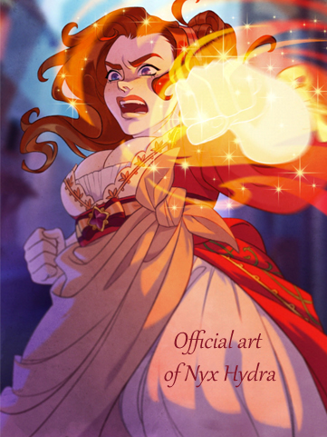
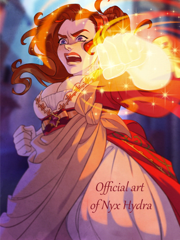

Home > Gallery > Portia Devorak
 

Portia Devorak - The Arcana - 2020
Portia was my first dive into period clothing. She comes from a small visual novel called The Arcana, which drops you into a medieval fantasy setting right before a masquerade. This is her gown, sans mask. I knew I'd be making this gown before the design was even released; however, I realized how much trouble I was in the moment I saw it. The Arcana has a tendency to draw on several different eras of period clothing for their novel, and Portia is based heavily on the Regency era, which spans from the late 1700's to the early 1800's.
The Regency era is identifiable by its high empire waistlines and straight skirts, as well as the scooping neckline, which was considered appropriate for the time. Portia's gown, however, is specifically designed for the English court, which insisted on the use of hoop skirts for 50 years following their decline in fashion. The crossing styles resulted in hoop skirts being hoisted up to the ribcage for the empire waistline, which removed the waist entirely and resulted in a hilarious "cake topper" effect. I decided to wear my hoop skirt at my natural waist for this reason.
Portia's gown took dozens of yards of fabric, primarily glossy satins, and has seven layers from chemise to robe. The project took upwards of 8 months; the design of her gown was revealed in February of 2020, and she was finished for a cosplay contest which closed on Halloween. Attempts to estimate the cost of the gown settle around $800, excluding value of labor. There is a lot of fabric in this dress.